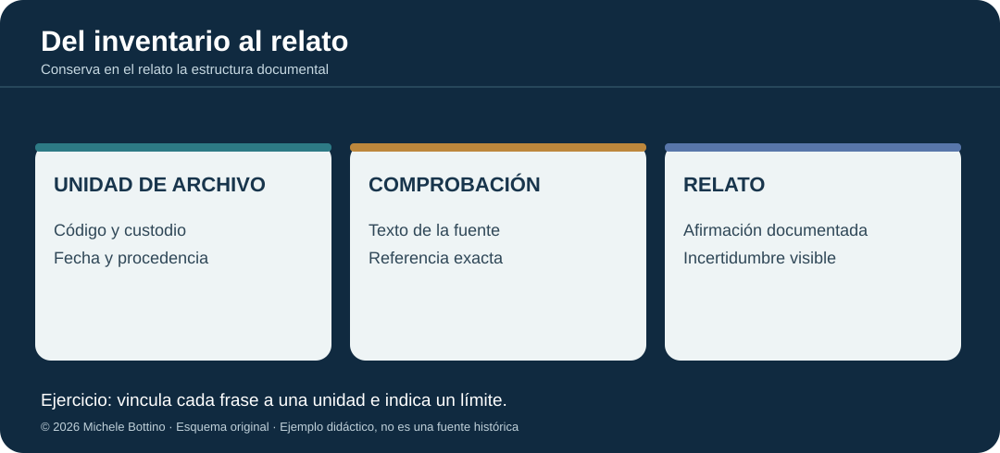

Officina delle Storie · Archivos y patrimonio
Del archivo al relato
Convierte documentos de archivo en un relato para el público. Elige un hilo narrativo y conserva la procedencia, las relaciones, las citas y los límites de las fuentes.
No se exige ningún curso previo. Se recomienda tener nociones de lectura, síntesis y escritura. El trabajo final es un relato de 900 a 1300 palabras con aparato documental.

Objetivos
- Definir la pregunta editorial y el público de un relato de archivo.
- Inventariar al menos seis unidades conservando fondo, serie, unidad, fecha y custodio.
- Relacionar fechas, personas y lugares indicando el grado de certeza.
- Construir una matriz de afirmaciones con citas verificables.
- Escribir un relato de archivo de 900 a 1300 palabras sin inventar desenlaces.
- Diseñar un recorrido accesible con cartelas, notas y un registro de fuentes.
- Atender a la privacidad y los derechos, controlar las versiones y revisar el trabajo.
Además de la verificación general de fuentes y de la biografía individual, este curso estudia la relación entre las unidades de un archivo y cómo convertirlas en un recorrido narrativo verificable.
Las diez unidades
Definir la pregunta, el público y los límites del proyecto narrativo.
Abrir la lección → (IT)Unidad 2/10El fondo y su procedenciaConservar las jerarquías y relaciones antes de extraer citas.
Abrir la lección → (IT)Unidad 3/10La ficha documentalPreparar descripciones reutilizables sin introducir interpretaciones no acreditadas.
Abrir la lección → (IT)Unidad 4/10Tiempos, personas y lugaresConstruir cronologías y registros de autoridad sin inventar conexiones.
Abrir la lección → (IT)Unidad 5/10Elegir el hilo narrativoConvertir el expediente en un guion sin deformar las pruebas.
Abrir la lección → (IT)Unidad 6/10Del documento a la afirmaciónPreparar una matriz que respalde cada afirmación importante.
Abrir la lección → (IT)Unidad 7/10Voces y documentos en el relatoIntegrar distintos registros sin atribuir palabras no documentadas.
Abrir la lección → (IT)Unidad 8/10Del archivo al recorrido para el públicoDiseñar formatos accesibles que mantengan la trazabilidad.
Abrir la lección → (IT)Unidad 9/10Revisión, protección y derechosPreparar una versión verificable sin divulgar datos indebidamente.
Abrir la lección → (IT)Unidad 10/10Taller: el relato de archivoCompletar y revisar un dossier narrativo con su aparato de fuentes.
Abrir la lección → (IT)El caso A-01
La sala de los mapas: siete documentos inventados, trece afirmaciones y preguntas, y un relato de 1055 palabras. Sigue el paso del inventario a la secuencia que se presenta al público.
Rúbrica prevista
| Criterio | Máximo |
|---|---|
| Procedencia y ordenación | 20 |
| Matriz de pruebas y citas | 25 |
| Estructura y legibilidad del relato | 25 |
| Accesibilidad, privacidad y derechos | 15 |
| Revisión y aparato editorial | 15 |
| Total | 100 |
El umbral previsto es de 70/100. Actualmente no se ofrece evaluación ni certificación oficial.
Un ejercicio con fuentes históricas auténticas
Para practicar el método con documentos conservados, diseña cuatro paneles a partir de tres números del Morgan City Daily Review de 1918. Selecciona, describe, ordena y atribuye las unidades. La tarea es diseñar un recorrido expositivo, sin repetir el artículo histórico del otro curso.
Portfolio final
Un relato de 900 a 1300 palabras, al menos seis unidades con procedencia y ocho testimonios documentales.
- Relato original
- Inventario razonado de al menos seis unidades
- Cronología y matriz de afirmaciones
- Dos cartelas con atribuciones
- Tres revisiones justificadas
- Nota sobre procedencia, derechos y límites
Para trabajar con un archivo real hay que verificar las fuentes y los permisos de consulta y publicación.
Progreso y cuaderno
Cargando desde este dispositivo…
Exporta el portfolio para conservar una copia fuera del navegador.